Uma rede de territórios do Sul da Bahia que aprendem, juntos, a cuidar das suas águas, dos seus resíduos, das suas relações e da sua floresta. Em 30 de julho de 2026, 90 pessoas de nove territórios se encontraram em Piracanga — e cada território descobriu que pode ser, ao mesmo tempo, aprendiz e sala de aula.
A tese que reúne esta rede é simples: muitas das crises ecológicas, sociais e institucionais compartilham uma raiz comum, a diminuição da nossa capacidade de cuidar.
Mas cuidado, aqui, não é sentimento nem aspiração moral. É um conjunto de processos observáveis, praticáveis e aprendíveis. E, se cuidado se aprende, comunidades inteiras podem construir as condições para aprender a cuidar cada vez melhor. É exatamente isso que está acontecendo na Bacia de Piracanga.
O encontro não apresenta uma teoria abstrata. Ele é construído em torno das iniciativas que já acontecem no território, apresentadas por quem as faz, todos os dias.
Proteção de nascentes, monitoramento da qualidade da água e gestão comunitária do sistema que abastece o território.
Processos coletivos de manejo, compostagem e regeneração, transformando resíduo em responsabilidade compartilhada.
Construindo confiança: círculos de governança, resolução de conflitos e mutirões que fazem o território cooperar e aprender junto.
Reflorestamento e restauração ecológica em curso: humanos como guardiões, ecossistemas como mestres.
Piracanga é o campo de observação do white paper Learning How to Care (Biomas Brasil): a proposta de transformar territórios inteiros em Territórios de Aprendizagem do Cuidado, lugares desenhados para o desenvolvimento humano contínuo, onde moradores, visitantes e instituições aprendem e ensinam fazendo.
↓ Ler o paper "Aprendendo a Cuidar" (PDF)Águas, resíduos, relações e floresta são tratados como processos produtores de cuidado, que podem ser observados, melhorados e transmitidos.
O Painel de Inteligência Territorial, construído pelo Instituto Biomas Brasil por e para os guardiões locais, permite que a comunidade aprenda com a própria prática.
Cada território que aprende a cuidar vira sala de aula para o próximo. A ambição é uma rede de Territórios de Aprendizagem do Cuidado, e ela começa aqui.
Cuidado, aqui, anda junto com dados. O Instituto Biomas Brasil, em parceria com as organizações de Piracanga, construiu a camada de inteligência e coordenação que permite ao território observar a si mesmo: o Painel de Inteligência Territorial de Piracanga, que reúne censo comunitário, mapas, rede de agentes locais e diagnóstico, é público e está operacional. É a base sobre a qual a comunidade aprende, prioriza e age.
Explorar o Painel de Inteligência Territorial → Dados abertos, construídos por e para os guardiões do território.O primeiro encontro da rede transformou práticas locais em uma experiência regional de aprendizagem e articulação.
De Barra Grande a Ilhéus, passando pela península de Maraú, pela vila de Piracanga, por Itacaré e Taboquinhas: a rede cobre uma faixa contínua do litoral sul da Bahia.
Clique nos pontos para ver cada território. O ponto verde é a Ecovila Piracanga, onde o encontro aconteceu.
Moradores e guardiões de Piracanga sentaram na mesma roda que universidades, institutos, movimentos do território, poder público e iniciativas locais de educação e cultura. Ao longo de um dia, o grupo conheceu quatro experiências de cuidado em campo, trocou saberes e formulou possibilidades de colaboração entre territórios.
Cada pessoa chegou com um crachá que trazia, em seis palavras, a resposta à pergunta: qual cuidado o seu território pratica bem?
Visita ao Templo das Águas, à Escola Almar, à Escola da Natureza e ao Coqueiral — cada processo narrado por quem o pratica.
Feijoada vegana da Unah, compartilhada como experiência de convivência e acolhimento. Oitenta pratos servidos.
Grupos de diálogo que reuniram experiências, desafios e possibilidades de ação em sete temas que atravessam toda a região.
Compartilhamento dos resultados, ritual coletivo e a primeira foto de uma rede que agora existe.
Os painéis produzidos nas rodas registraram experiências já existentes, desafios compartilhados e caminhos possíveis de cooperação. Esta é a primeira agenda comum da rede.
Chuvas, secas, inundações, lagoas aterradas, contaminação e avanço do mar. Caminhos: captação e recuperação de lagoas, agrofloresta, limites à construção, campanhas e educação voltada também para o mar.
Separação e destinação, reciclagem, compostagem, ecopontos e educação ambiental. Desafios: a dimensão cultural do descarte, a falta de apoio continuado e os impactos do lixão de Maraú.
Escuta de moradores antigos e recém-chegados, participação no plano diretor, acesso às praias, proteção de cursos d'água e preservação das culturas quilombolas e populares.
BA-001, BR-030 e seus impactos sobre a região e o Parque do Conduru. Necessidade de audiência pública, estudos de impacto e participação do Ministério Público.
Violência doméstica, desigualdades econômicas e raciais, ancestralidade e autoconhecimento. Escuta, respeito e conexão como base para acolher diferenças e reconhecer dores.
Da prática exploratória e de massa ao turismo comunitário, sustentável e regenerativo — conectado ao bem-estar, à natureza e à cultura local.
Agricultura familiar, agrofloresta, permacultura, compostagem, saneamento ecológico e recuperação do solo, integrando água, terra, floresta e comunidade.
Tudo o que está escrito acima nasceu destes papéis. Eles foram construídos à mão, ao vivo, por quem estava na roda.
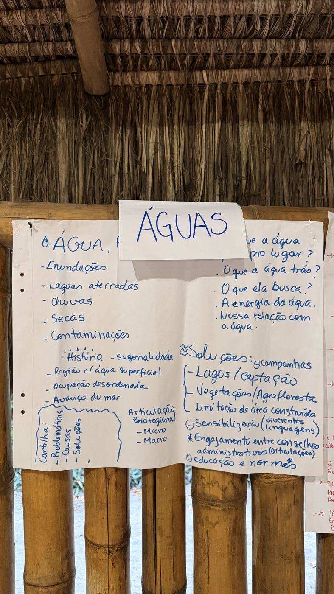
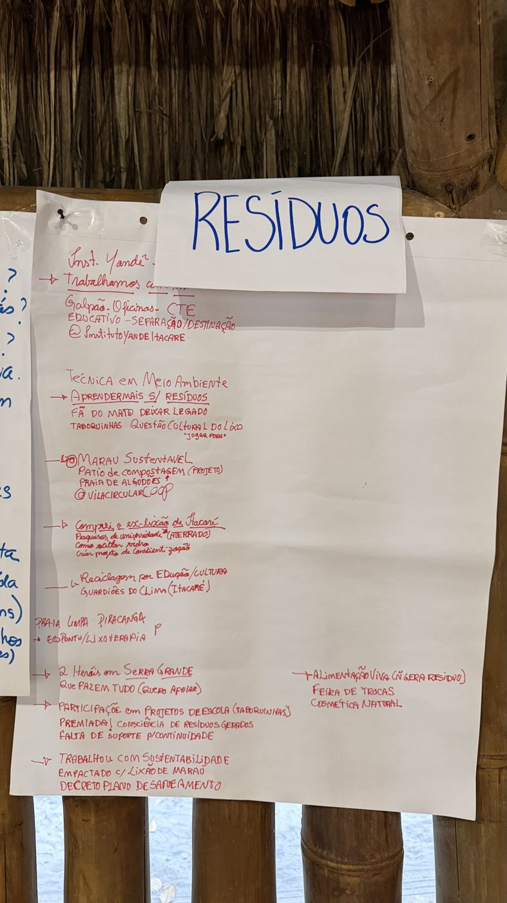
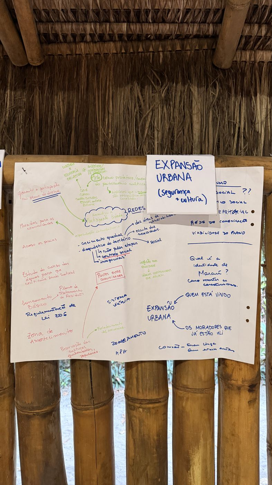
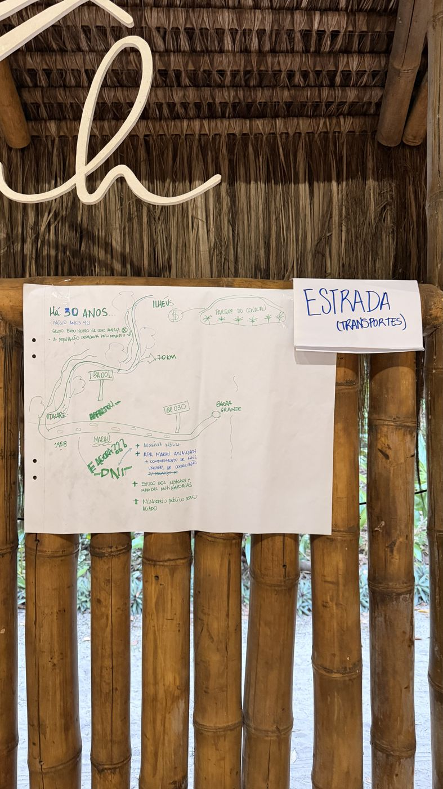
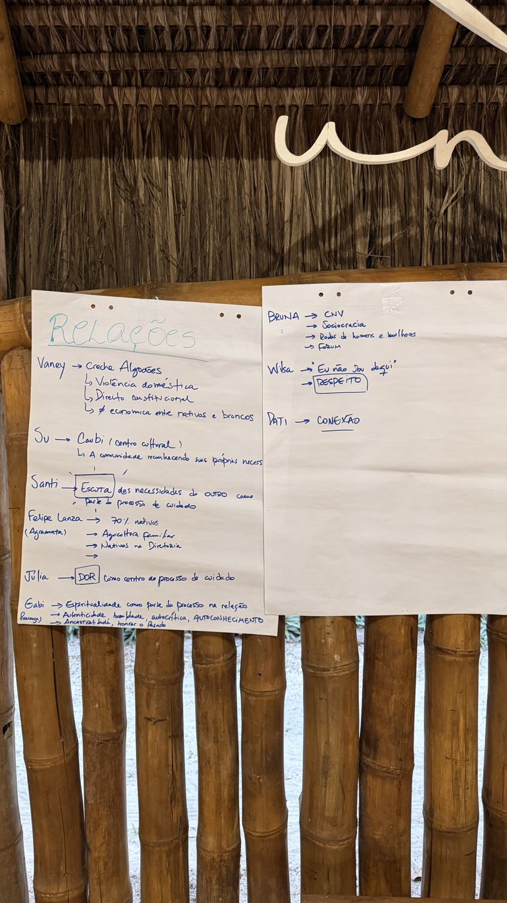
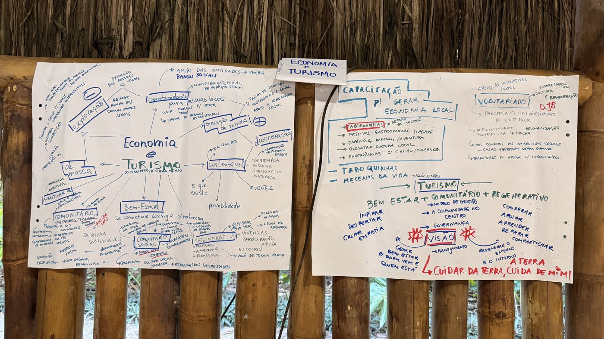
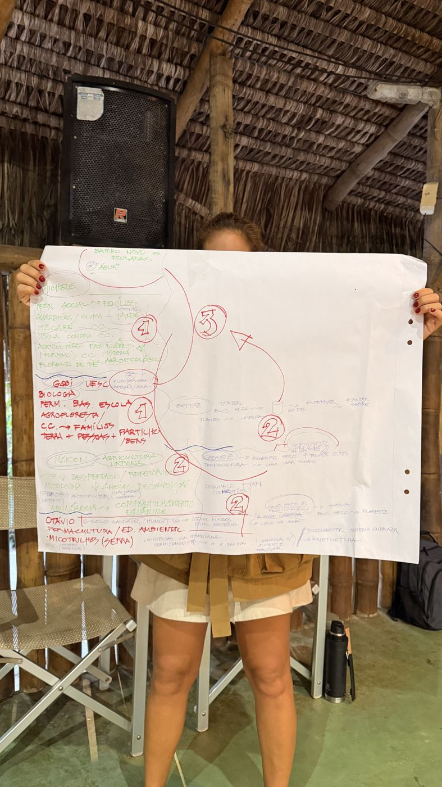
Educação e sensibilização como condição para mudanças duradouras.
Articulação em rede para conectar capacidades existentes e evitar iniciativas isoladas.
Participação comunitária como requisito para decisões legítimas sobre o território.
Cuidado e regeneração em todos os temas: os desafios não podem ser tratados separadamente.
As mensagens que chegaram depois do dia 30 revelam o encontro como espaço de pertencimento, inspiração e abertura para uma agenda comum.
“Ver tanta gente mobilizada, interessada e conectada ampliou muito a minha compreensão da região e de tudo o que pode ser construído a partir do Centro Cultural e mais além. Saio muito inspirada e com a sensação de que estamos apenas começando.”Juli
“Foi muito legal essa união e a forma como conduziram. Obrigado pelo acolhimento e por dividirem os pontos positivos e negativos que vocês vêm vivendo na vila. Essa troca foi bem construtiva para a gente.”Gabriel · Algodões
“Quem chega traz um olhar novo, atento a detalhes que nós, por estarmos aqui há tanto tempo, acabamos deixando passar. Essa troca é muito rica. Espero que este tenha sido apenas o primeiro de muitos encontros.”Participante
“Há mais de dez anos Piracanga produz tantos significados em minha vida. Que alegria colaborar, aprender com amigos que admiro e me sentir parte desta história.”Participante
Cada pessoa chegou com um crachá feito à mão, trazendo o nome, a iniciativa e a resposta a uma pergunta: qual cuidado o seu território pratica bem? A contribuição antes da instituição.
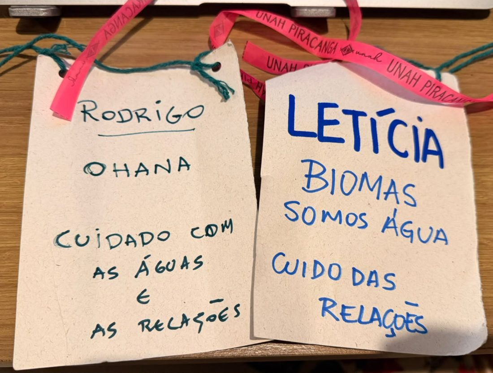
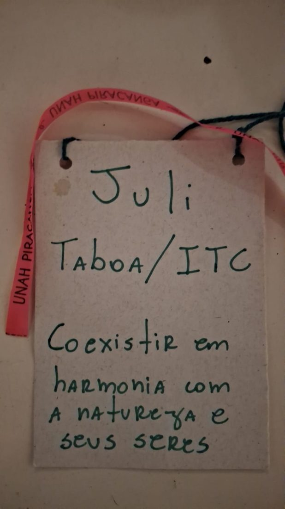
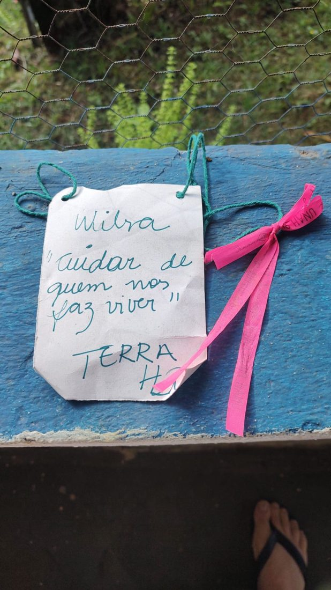
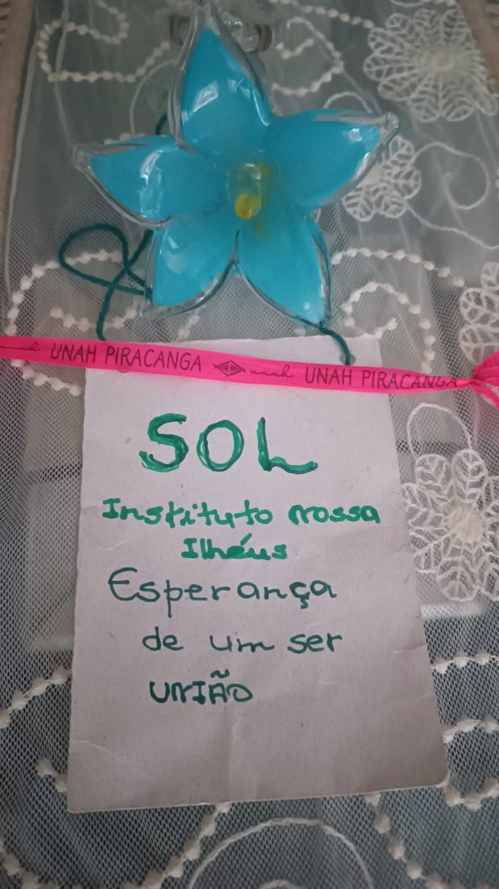
“Cuidar de quem nos faz viver.” · “Coexistir em harmonia com a natureza e seus seres.” · “Esperança de um ser: união.”
O encontro de 30 de julho não foi um ponto final: foi o primeiro passo de uma rede regional de aprendizagem e colaboração. Estes são os próximos.
Registro fotográfico, síntese das rodas, murais e frases coletivas devolvidos a todas as pessoas que participaram.
Publicação das primeiras fichas dos processos observados na Trilha, com autoria e crédito a quem os pratica e a quem os observou.
Retomada dos compromissos em mini-rodas temáticas, com responsáveis e primeiros marcos.
Calendário anual da rede e o segundo encontro em outro território — cada território vira, na sua vez, a sala de aula.
Quer caminhar junto?
A rede é aberta a quem cuida de um território no Sul da Bahia — comunidades, coletivos, instituições, universidades e poder público.
Escrever para a rede →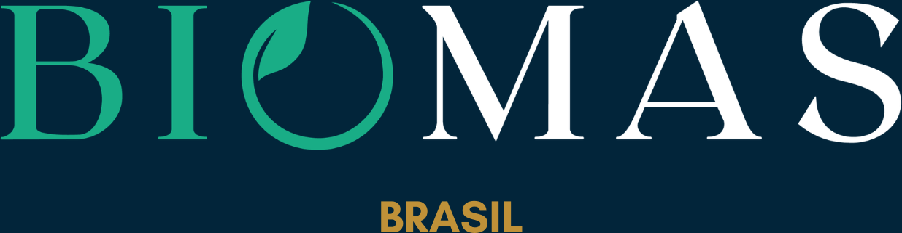
Biomas Brasil
Instituto Somos Água
Instituto Arapyaú
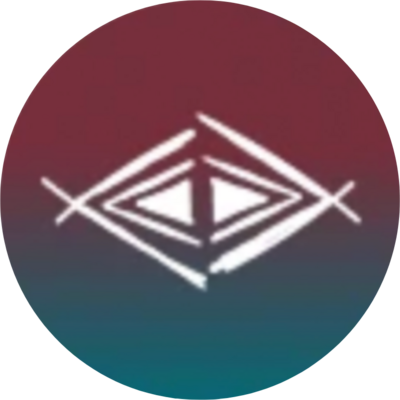
Unah Piracanga
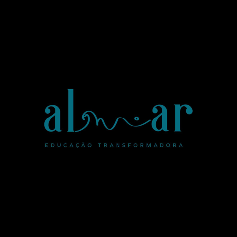
Escola Almar

Escola da Natureza
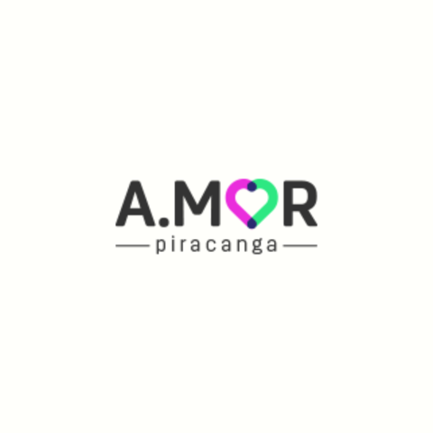
A.mor